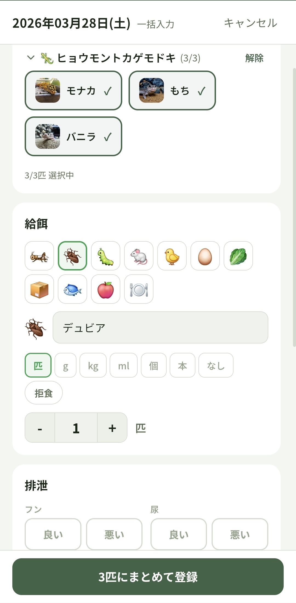
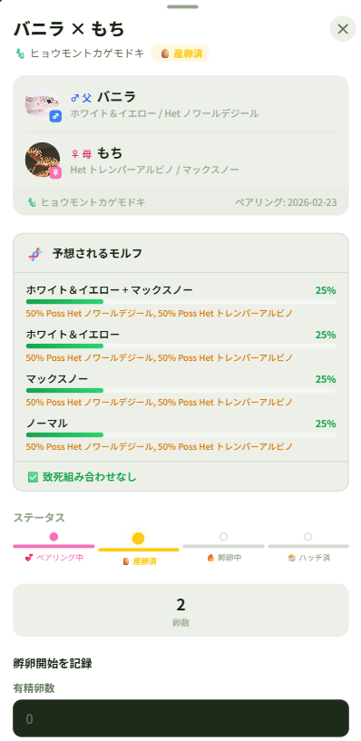
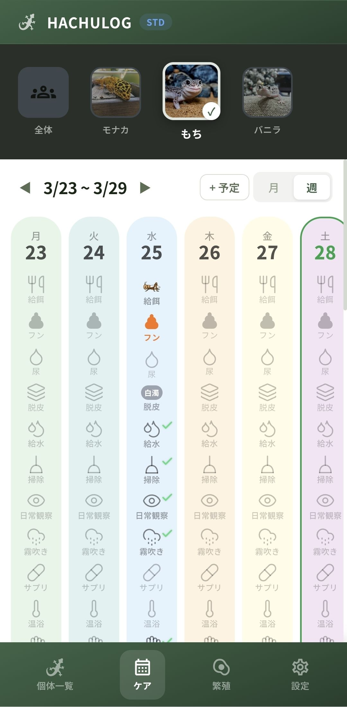

あの子の「元気」を、 手のひらで管理。
多頭飼育でも迷わない。
給餌・脱皮・体重をまとめて記録できる、
爬虫類専用の次世代管理アプリ。
多頭飼育でも迷わない。
給餌・脱皮・体重をまとめて記録できる、
爬虫類専用の次世代管理アプリ。
複数個体の一括入力に対応。タップ数回で全員の給餌記録が完了。忙しい飼い主さんの時間を奪いません。

ペアリングから産卵、孵化までの進捗管理。血統図の自動生成やモルフ予測機能も搭載予定。

給餌・排泄・脱皮・掃除の記録をカレンダーでまとめて表示。週表示で一週間の状況を一覧できます。
